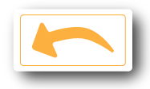

<!DOCTYPE html>
<html>
    <head>
        <meta charset="utf-8">
        <meta name="viewport" content="initial-scale=1, maximum-scale=1, user-scalable=no, width=device-width">
        <title></title>
        <!-- build:css styles/vendor.css -->
        <!-- bower:css -->
        <link rel="stylesheet" href="bower_components/ionic/css/ionic.css" />
        <!-- endbower -->
        <!-- endbuild -->
        <!-- build:css styles/styles.css -->
        <!-- <link href="styles/style.css" rel="styesheet"> -->
        <!-- endbuild -->
        
        <link href="styles/ionic.app.css" rel="stylesheet">

    </head>
    <body ng-app="neofen">
        <!--
        The nav bar that will be updated as we navigate between views.
        -->
        <ion-nav-bar class="bar-stable" align-title="center">
<!--         <ion-nav-back-button>
        
        </ion-nav-back-button> -->
        </ion-nav-bar>
        <!--
        The views will be rendered in the <ion-nav-view> directive below
        Templates are in the /templates folder (but you could also
        have templates inline in this html file if you'd like).
        -->
        <ion-nav-view animation="none" class="view-slide-in"></ion-nav-view>
        <!-- ionic/angularjs js -->
        <!-- build:js scripts/vendor.js -->
        <!-- bower:js -->
        <script src="bower_components/angular/angular.js"></script>
        <script src="bower_components/angular-animate/angular-animate.js"></script>
        <script src="bower_components/angular-sanitize/angular-sanitize.js"></script>
        <script src="bower_components/angular-ui-router/release/angular-ui-router.js"></script>
        <script src="bower_components/ionic/js/ionic.js"></script>
        <script src="bower_components/ionic/js/ionic-angular.js"></script>
        <script src="bower_components/ngCordova/dist/ng-cordova.js"></script>
        <script src="bower_components/gsap/src/uncompressed/TweenMax.js"></script>
        <script src="bower_components/ngFx/dist/ngFx.js"></script>
        <!-- endbower -->
        <!-- endbuild -->
        <!-- cordova script (this will be a 404 during development) -->
        <script src="cordova.js"></script>
        <!-- your app's js -->
        <!-- build:js scripts/scripts.js -->
        <script src="scripts/app/app.moduls.js" type="text/javascript" charset="utf-8"></script>
        <script src="scripts/app/app.routes.js" type="text/javascript" charset="utf-8"></script>
        <script src="scripts/app/app.js" type="text/javascript" charset="utf-8"></script>
        <script src="scripts/controllers.js" type="text/javascript" charset="utf-8"></script>
        <script src="scripts/services.js" type="text/javascript" charset="utf-8"></script>
        <script src="scripts/app/configuration.js" type="text/javascript" charset="utf-8"></script>
        <script src="scripts/controllers/home.controller.js" type="text/javascript" charset="utf-8"></script>
        <script src="scripts/controllers/tabs.controller.js" type="text/javascript" charset="utf-8"></script>
        <script src="scripts/controllers/calculator.controller.js" type="text/javascript" charset="utf-8"></script>
        <script src="scripts/controllers/products.controller.js" type="text/javascript" charset="utf-8"></script>
        <script src="scripts/controllers/productdetails.controller.js" type="text/javascript" charset="utf-8"></script>
        <script src="scripts/controllers/info.controller.js" type="text/javascript" charset="utf-8"></script>
        <script src="scripts/directives/directive.abacus.js" type="text/javascript" charset="utf-8"></script>
        <script src="scripts/directives/directive.starbutton.js" type="text/javascript" charset="utf-8"></script>
        <!-- endbuild -->
    </body>
</html>